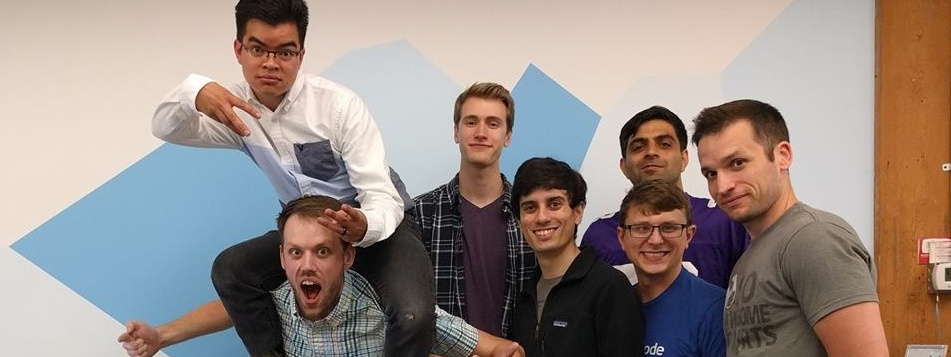

Intro
I'm a computer science major with experience in firmware,
software, and web programming, currently seeking employment for a job involving one or more of those things.
I currently live in Minneapolis, Minnesota and am passionate about all types of technology. Check out some of my projects here!
Work

Wells Fargo
(Business Systems Consultant, July 2017-Present)
- Manage communication and whitepapers for the Retail Delivery Systems team
- Build and oversee brokerage of VDIs (virtual desktops)
- Single-handedly developed the new system of maintenance for the VDIs and trained another team to use it for future changes
- Organize users and manage priviledges to test/dev/prod servers
- Provide technical support for those experiencing issues on the VDIs or any other computer-based problem
Punch Through Design
(Software/Firmware/Web Developer, May 2016 - July 2017)
- popSLATE 2 firmware(written in C, tested in Python, used various debugging hardware)
- Wrote tutorials, guides, and projects for the LightBlue Bean (Arduino and BLE profiles)
- Augmented company website to fix bugs and increase views/sales (Github, Heroku, AWS)
- Improved shipping fulfillment process (Shopify API, Liquid)
Innovative Tech. Partners
(IT Support, Oct 2010 - May 2016)
- Built and maintained PCs, laptops, servers, NAS units, switches, routers, modems, VoIP systems, and more
- Worked directly with end-users to solve technical problems and upgrade hardware and software
- Managed IT infrastructure with GFI Max IT monitoring and support tools
- Provided remote support using TeamViewer for Windows and Mac
Bruegger's Bagels
(Bagel Baker & Sandwich Maker, July 2013 - July 2014)
- Worked with difficult customers to craft precise stacks of ingredients
- Prepared raw ingredients for the following day and documented stock
- Put raw dough in oven and used powerful alchemical skills to turn it into cooked bagels
Projects
- Fnid, a Chrome finder plugin that accounts for spelling errors (Winter Wonderhack 2016).
- MacBot, a conversational AI with API integrations to Slack, Facebook Messenger, and Weather Underground (Spartahack 2017).
- CoffeeBot, a coffee maker with SMS capabilities (was featured in newsletter as Instructable of the week).
- Pumpkin Notifire a wireless, ANCS-connected, fire-breathing jack-o-lantern.
- Budget Raspberry Pi arcade cabinet (customized RetroPie distro, cabinet made of recycled wooden pallet boards).
- Shoetooth Fight Stick, a retro arcade-style controller built into a shoebox that communicates with HID over Bluetooth Low-Energy.
- Fakey Makey, a dirt-cheap version of the Makey Makey made with an Arduino UNO and resistors.
- Arduino leak detector for large appliances
- CDAL-C++ cross compiler
- Various soldering side-projects
- Check my GitHub for projects I may never finish
Contact
Think I'd be a good fit at your company?
Want to know more?
Email me at gsundin.web@gmail.com